|
|
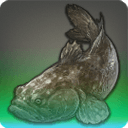 |
Dream Goby |
| 70 Rivers | |
| A king among dusk gobies, and lord of the waters of upper Soot Creek. |
In times of yore, there existed a nomadic people who believed that, in times of want, a gigantic goby would appear in their dreams to herald the coming of plenty. It is from this tradition that the dream goby derives its name. |
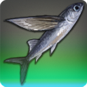 |
Navigator's Brand |
| 70 Deep Sea | |
| A king among Navigator's daggers, and lord of the waters of the Brewer's Beacon. |
Cousin to the Navigator's dagger, fishers believe that this wavekin was the blade that Llymlaen threw at Oschon in Her fury at having Her naked form espied. The incident led to the latter taking Menphina as His lover. |
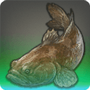 |
Dark Ambusher |
| 80 Rivers | |
| A king among dark sleepers, and lord of the waters of Sweetbloom Pier. |
A dark sleeper that has grown to immense proportions. Having the appearance of a boulder, it lies completely still in wait for prey, and strikes with an alacrity that belies its girth. |
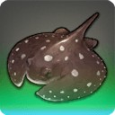 |
Judgeray |
| 80 Lakes | |
| A magnificent specimen of stingray, a cartilaginous fish possessed of a razorsharp, poisonous stinger. Lord of the waters of Fallgourd Float. |
In the distant past, the Gridanians used to try individuals suspected of heinous crimes by forcing them to share a pond with this extremely venomous stingray. |
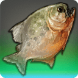 |
Bloody Brewer |
| 70 Rivers | |
| A king among pipira, and lord of the waters of lower Black Tea Brook. |
Whereas the common pipira is satisfied with a bit of skin from your ankles, the bloody brewer will not stop until it paints the waters of Black Tea Brook a bright crimson. |
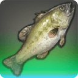 |
Faerie Queen |
| 80 Lakes | |
| A king among faerie bass, and lord of the waters of Empty Heart. |
Unlike its more placid kin, this royalty among faerie bass shies not from confrontation, and has even been known to best entire schools of dark bass. |
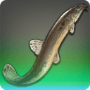 |
Slime King |
| 75 Lakes | |
| A king among brass loaches, and lord of the waters of lower Soot Creek. |
If you thought that loaches were slimy, chances are you have not met the slime king. So slimy is His Royal Sliminess, even the most resolute of Sultansworn have been said to despair of catching it. |
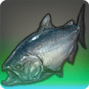 |
Blue Widow |
| 80 Rivers M (2) | |
A king among bluebell salmon, and lord of the waters of Murmur Rills.
[Suitable for display in aquariums tier 2 and higher.] |
Having completed its epic migratory swim, the blue salmon's final act is to lay its clutch. Not so the blue widow, who is said to have repeated the journey beyond count. Owing to this miraculous feat, it has come to symbolize longevity in Gridania. |
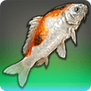 |
Ghost Carp |
| 80 Rivers | |
| A king among tri-colored carp, and lord of the waters of the Mirror. |
The mischievous hand of fate has given the ghost carp the countenance of a man when beheld squarely. Superstitious folk believe that the souls of drowned sailors are trapped within such fish, and will utter a warding prayer if they should have the ill chance to come upon one. |
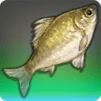 |
Carp Diem |
| 70 Rivers | |
| A king among moat carp, and lord of the waters of upper Black Tea Brook. |
The carp who seizes the day is a carp who lives the longest. The truth of these words is attested by the carp diem, a moat carp that has for generations eluded the lure of anglers. |
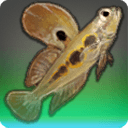 |
Mud Pilgrim |
| 80 Lakes | |
| A king among mudskippers, and lord of the waters of south Drybone. |
No mudskipper has journeyed further from water in search of the promised land than the fabled mud pilgrim. |
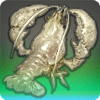 |
Old Softie |
| 75 Lakes | |
| A king among bone crayfish, and lord of the waters of the Clutch. |
Unlike most other bone crayfish, Old Softie's shell never hardens fully. While some may consider this trait a vulnerability in the wilds, the softness prevents anglers' hooks from getting purchase. |
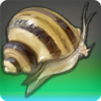 |
Marrow Sucker |
| 80 Lakes | |
| A king among bone cleaners, and lord of the waters of north Drybone. |
Nature has bestowed this freshwater snail with prodigious size and a powerful suction to match. Any carrion it chances upon is cleaned inside out. |
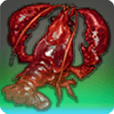 |
Chirurgeon |
| 70 Rivers | |
| A king among eunuch crayfish, and lord of the waters of the Vein. |
Being devoured whole far from spells the end of this grizzled crayfish. A handful of travelers have reported witnessing the stomach-churning sight of a chirurgeon cutting its way out of a hapless, very much living eft's stomach. |
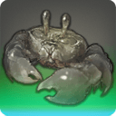 |
Mud Golem |
| 75 Lakes | |
| A king among mudcrabs, and lord of the waters of the Footfalls. |
This mudcrab has grown to such impossible proportions as to put people in mind of a golem when it scuttles through murky waters. |
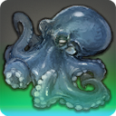 |
Octomammoth |
| 70 Coastlines | |
| A king among blue octopodes, and lord of the waters of the Limsa Lominsa lower decks. |
Once an ordinary blue octopus, legend holds that the octomammoth grew strong through its eternal rivalry with the fearsome gigantshark. When the two meet in the open sea, an epic battle must ensue. |
|
Matron Carp |
| 70 Rivers | |
| A queen among maiden carp, and ruler of the waters of Whispering Gorge. |
Lord Lolorito, known in some circles as the “Chefsbane,” for a time offered a hefty bounty for those who could bring him the elusive matron carp. However, the man soon grew weary of fish, and promptly withdrew his offer. |
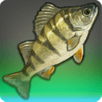 |
High Perch |
| 70 Rivers M (2) | |
A king among La Noscean perch, and lord of the waters of the Nym River.
[Suitable for display in aquariums tier 2 and higher.] |
A perch that has risen to greatness among its kind, and presides over the waters of the Nym River. Only the biggest and choicest of minnows is said to meet its fastidious tastes. |
|
Syldra |
| 75 Coastlines | |
| A queen among leafy seadragons, and ruler of the waters of Cedarwood. |
Legend tells of a sea serpent known as Syldra, who towed her mistress's galleon from a maelstrom's deathly grip, only to perish from the exertion. It is in honor of the noble creature's ultimate sacrifice that this gigantic leafy seadragon is named. |
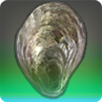 |
Rivet Oyster |
| 80 Coastlines | |
| A king among Rothlyt oysters, and lord of the waters of Vesper Bay. |
An enormous oyster so named for the tenacity with which it clings on to rock. Those who desire to catch it must be prepared to pull up entire outcroppings. |
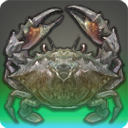 |
Jacques the Snipper |
| 75 Coastlines | |
| A king among pebble crabs, and lord of the waters of the Moraby Drydocks. |
Jacques the Snipper is the name given to this fiendish pebble crab, who has a penchant for cutting mooring lines and setting fishing vessels adrift. For long years it has been the bane of shipwrights and anglers alike. |
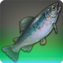 |
Stormdancer |
| 70 Lakes | |
| A king among raincallers, and lord of the waters of the Jadeite Flood. |
One dark torrential night, a lone fisher claims to have witnessed an uncommonly large raincaller splashing about the swollen Jadeite Flood in what appeared to be a piscine dance. So it was that the man named it the “stormdancer.” |
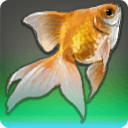 |
Glimmerscale |
| 70 Lakes | |
| A king among copperfish, and lord of the waters of Nophica's Wells. |
Owing to an inexplicable phenomenon, the scales of this copperfish have taken on the lustrous sheen of a looking glass. The light that it reflects serves to blind nearby creatures, be they predators or rivals for food. |
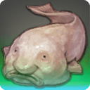 |
Cupfish |
| 80 Lakes M (2) | |
A rare freshwater fish which spends the entirety of its life hiding in locations which rarely see the light of the sun.
[Suitable for display in aquariums tier 2 and higher.] |
Cursed by the Twelve to live out its pitiful life as not only a fish, but a fish with a head resembling that of a right sotted Roegadyn, the cupfish chooses to dwell deep in underground caves, away from those who might heap the poor wavekin with unwarranted ridicule. |
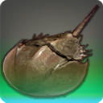 |
Meteor Survivor |
| 80 Coastlines | |
| A king among helmet crabs, and lord of the waters off the Salt Strand. |
In darkness, the helmet dreams, as from the waves of destruction a new beginning rises. Come, brave fishers, heed the helmet's call. Gather once more and witness a crab respawned. |
|